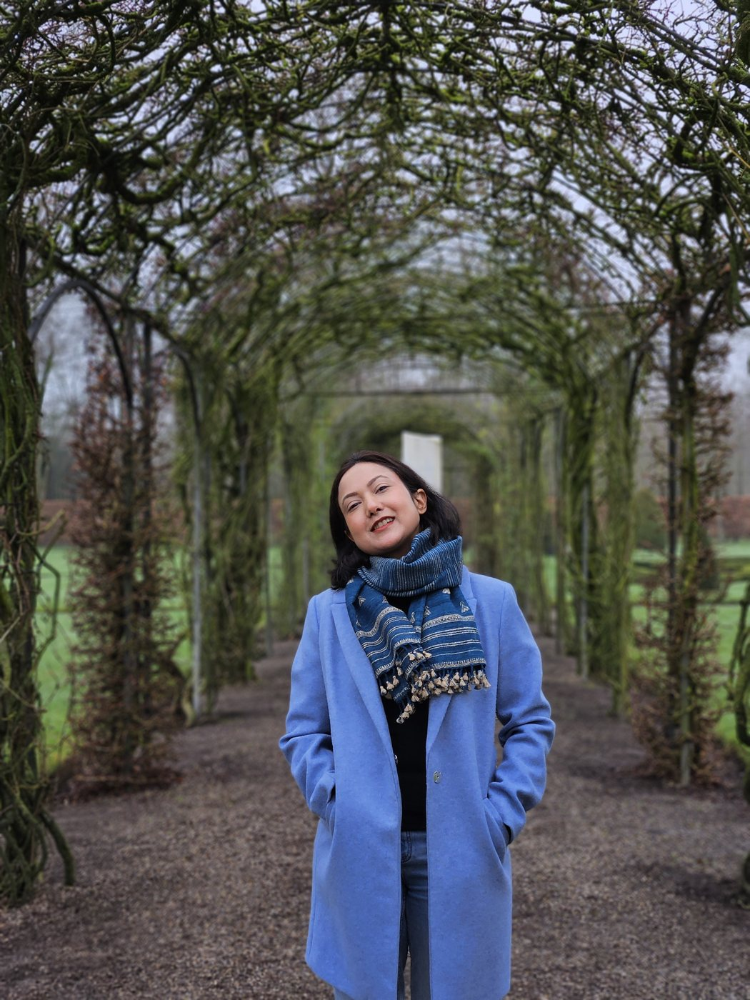
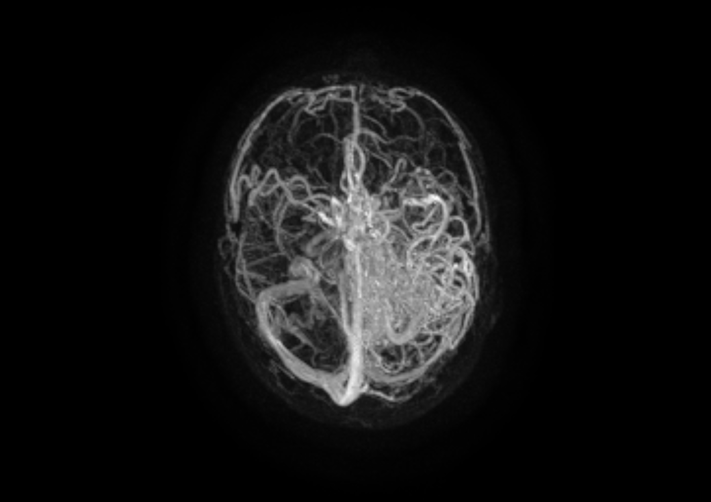

Pratishtha Chatterjee Foundation for Neuroscience
Pratishtha: honour, dignity, a firm foundation.
In memory of Dr Pratishtha (Rimi) Chatterjee. Supporting young researchers from diverse backgrounds in progressing research into cerebral diseases, including AVM, dementia and related disorders.
The memorial grant Her story
A brilliant scientist, and so much more.
Pratishtha was a brilliant scientist who, while living with a cerebral AVM, dedicated her life to improving Alzheimer's diagnosis. Her resilience and empathy inspired everyone around her, even those who had no idea of the fight she was quietly carrying.
Her passion for research never wavered. She overcame her own health challenges to progress the field, and she always aspired for more. She worked tirelessly to secure the funding her research needed, driven by the belief that better science could change lives. It takes a different kind of bravery to dedicate yourself to understanding a part of the human body that is so personal to you.
Dr Chatterjee was also deeply committed to supporting the next generation of researchers, particularly early-career scientists, women and those from diverse backgrounds. Like many at a similar stage, she knew how hard it can be to fund the opportunities that matter so much to a scientific career, from travel and collaboration to the research itself.
“Exposure is the greatest influence in life.” Pratishtha Chatterjee

Dr Pratishtha Chatterjee Memorial Travel and Collaboration Grant
2026 applications are now closedOffered for the first time in the Dementia Australia Research Foundation's 2026 Grant Program, this annual grant supports women and culturally and linguistically diverse researchers studying strategies for earlier, more accessible and more accurate dementia diagnosis.
The grant is currently supported by Professor Abhay Singh, to advance research into cerebral diseases. From 2028, it will be supported by the Pratishtha Chatterjee Foundation for Neuroscience, once the foundation is established. It honours her significant contributions to dementia research, including through grants she received from the Dementia Australia Research Foundation.
The grant gives fellow researchers exactly the kind of exposure Pratishtha believed in. Future rounds will be announced by the Dementia Australia Research Foundation.
Find out more about the grantResearch that offers hope of a healthier, longer life.
The Pratishtha Chatterjee Foundation for Neuroscience exists to support young researchers from diverse backgrounds in progressing research into cerebral diseases, including AVM, dementia and related disorders. It hopes to advance the field so that anyone living with these conditions, as Pratishtha did, has hope of a healthier and longer life.
Pratishtha was looking forward to the life ahead when she was lost unexpectedly, following a procedure that carried around a 5% risk of any severe complication. We hope that progress in research can help prevent such unforeseen losses for others.
Her name means honour and a firm foundation, and that is what this foundation hopes to be.
Young researchers
Backing early-career scientists at the stage where funding for travel and collaboration is hardest to find.
Women in science
Opening doors for women pursuing careers in neuroscience and brain health research.
Diverse backgrounds
Widening access so that talent, not circumstance, shapes who gets to take part.
Cerebral disease research
Advancing understanding, diagnosis and treatment of AVM, dementia and related disorders, so that people living with them can live healthier, longer lives.
About the foundation's status
The Pratishtha Chatterjee Foundation for Neuroscience is a private giving fund. It is currently being established and intends to apply for registration with the Australian Charities and Not-for-profits Commission (ACNC). It will begin operating soon.
For further information, please get in touch.
To know more about Dr Chatterjee.
For Pratishtha, always.
My grief for Pratishtha will never end, and neither will my love for her, or hers for me. I feel her love every day.
Pratishtha believed that exposure is the greatest influence in life, and she was committed to opening doors for the next generation of researchers. This foundation is how that generosity will continue: supporting young scientists from diverse backgrounds to advance research into cerebral diseases, including dementia, the field she dedicated her career to, and AVM, the condition she lived with, so that people living with these conditions have more hope of a healthier, longer life.
Her legacy will live on forever through the work of the researchers it supports.
Abhay Singh